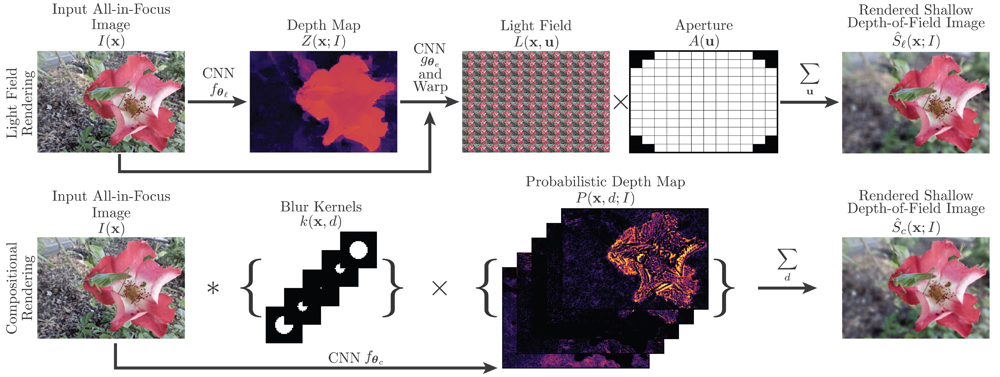

Depth Estimation and Application
Lijun Wang
July 1, 2018
Topics
- Architecture
- Loss Function
- Training Strategy
- Application on RGB-D
Depth Map Prediction from a Single Image using a Multi-Scale Deep Network
By Eigen et al., NIPS 2014
Depth Map Prediction from a Single Image using a Multi-Scale Deep Network
- Much of the error is explained by how well the mean depth is predicted
- 20% relative improvement
- Scale invariant loss:
$D(y,y^{*}) = \sum \limits_{i,j} [(\log y_i - \log y_j) - (\log y^*_i - \log y^*_j)]^2$
One Multi-Scale Architecture for Multi-Task

- Multi-scale architecture
- Solve multiple tasks
- Scale-invariant loss + Gradient loss
Deeper Depth Prediction with Fully Convolutional Residual Networks
By Laina et al, IEEE International Conference on 3D Vision 2016
Faster Up-Convolution

Faster Up-Convolution
A Two-Stream Network for Depth Estimation
[2] Li et al, A Two-Streamed Network for Estimating Fine-Scaled Depth Maps from Single RGB Images, ICCV 2017A Two-Stream Network for Depth Estimation
- Set Loss
- Fusing Depth and Depth Gradient
- End-to-end as refinement
- Optimization
$L_{\textrm{single}} + \Omega_{\textrm{set}}$
$D^* = \arg \min \limits_{D} \sum \limits _{p=1}^{N} \phi (D^p - D^p_{est}) \\ + \alpha \sum \limits_{p=1}^{N} [\phi (\nabla_x D^p - G_x^p) + \phi (\nabla_y D^p - G_y^p)]$
How about training data?
Existing Depth Data Set
| DataSet | Statics | Anotation | Scene |
|---|---|---|---|
| NYUD-v2 | 1449 + 407K raw | Depth + Segmentation | Indoor |
| KITTI | 94k frames | Depth aligned with raw data | Street |
| Make3D | 500 low-resolution | Depth | Outdoor |
| SUNRGB-D | 10k | Depth, Segmentation, 3D bounding box | Indoor |
Drawbacks of Exising Data Sets
- Very limited in terms of scene variety
- Trained models struggle to generalize across scenes
Solution
Different training strategies:
- Weakly supervised training
- Unsupervised training
- Semi-supervised training
- Multi-task training
Single-Image Depth Perception in the Wild
By Chen et al, NIPS 2016

Motivation
Increase scene diversity with interenet images.

Challenge: How to Acquire Depth
Humans are better at judging relative depth:
“Is point A closer than point B?”
A relative depth data set
Data Collection
- Gather 0.5M images from Flickr
- Anotate relative depth for one pair of points per image

Learning with Relative Depth
Ranking Loss:
$L(I,R,z)=\sum \limits_k \psi(I, i_k, j_k, r, z)$
where the loss for the $k$-th quiry:
$\psi(I, i_k, j_k, r, z) = \begin{cases} \log (1+\exp (-z_{i_k} + z_{j_k})), & \mbox{if } r_k=+1\\ \log (1+\exp (z_{i_k} - z_{j_k})), & \mbox{if } r_k=-1 \\ (z_{i_k} - z_{j_k})^2, & \mbox{if } r_k=0 \end{cases}$

Generate GT Depth from Multi-view Internet Images
[3] MegaDepth: Learning Single-View Depth Prediction from Internet Photos, CVPR 2018, WebPage- Landmark10k data sets with multi-view photos for each landmark
- Build 3D model for each collection with SfM
- Depth Reconstruction with MVS
Data Categorization: Euclidean vs. Ordinal Depth
If $\ge 30\%$ valid depth ⇒ Euclidean loss
Otherwise ⇒ ordinal loss
Determine foreground with semantic info
Loss Function
$L = L_{\mbox{data}} + \alpha L_{\mbox{grad}} + \beta L_{\mbox{ord}}$$L_{\mbox{grad}}=\frac{1}{n} \sum \limits_k \sum \limits_i (|\nabla_x R_i^k + \nabla_y R_i^k|)$

A Similar Work
[4] Monocular Relative Depth Perception with Web Stereo Data Supervision, CVPR 2018- Collect stereo web images for depth estimation
- Compute optical flow to infer disparity (depth)
- Still use ordinal loss but sample point pairs online (Absolute depth is unavailable?)
Learning Depth Estimation from Image Alignment Loss
[4] Semi-Supervised Deep Learning for Monocular Depth Map Prediction, CVPR 2018- Supervised: sparse depth supervision
- Unsupervised: image alignment
Similar Ideas using Monocular Videos

Similar Ideas using Monocular Videos
[5] Unsupervised Learning of Depth and Ego-Motion from Video, CVPR 2017
[6]GeoNet: Unsupervised Learning of Dense Depth, Optical Flow and Camera Pose, CVPR 2018
[7]Learning Depth from Monocular Videos using Direct Methods, CVPR 2018
Aperture Supervision for Monocular Depth Estimation
By Srinivasan et al, CVPR 2018
Image ⇒ Depth ⇒ Rendering function ⇒ Shallow DoF
Scenarios are limited, mainly flowers
Additional Works with New Training Strategies
[8]PAD-Net: Multi-Tasks Guided Prediction-and-Distillation Network for Simultaneous Depth Estimation and Scene Parsing, CVPR 18
Additional Works with New Training Strategies
[9]AdaDepth: Unsupervised Content Congruent Adaptation for Depth Estimatio, CVPR 18
Additional Works with New Training Strategies
[10]Salience Guided Depth Calibration for Perceptually Optimized Compressive Light Field 3D Display, CVPR 18

Future Directions
- Borrow idea from saliency for depth estimation
- Depth completion/refinement from sparse input
- Application based on RGB-D data
Application on RGB-D
-
2D ⇒ 2.5D ⇒ 3D
- Using depth as additional low-level cues
- Solve 2D by 3D construction for better scene understanding CS231A: Computer Vision, From 3D Reconstruction to Recognition